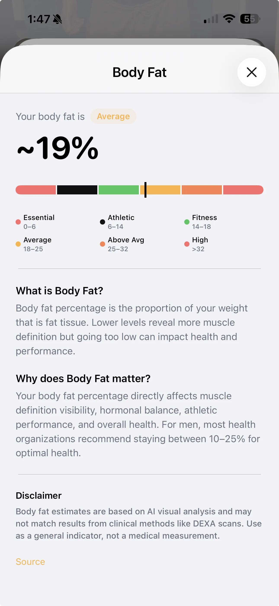
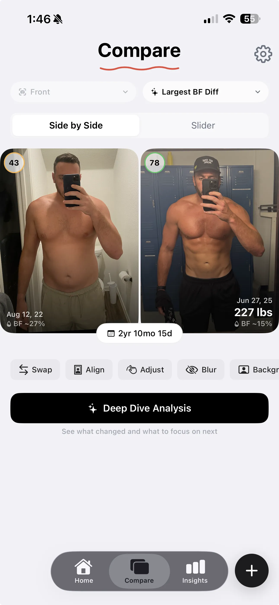
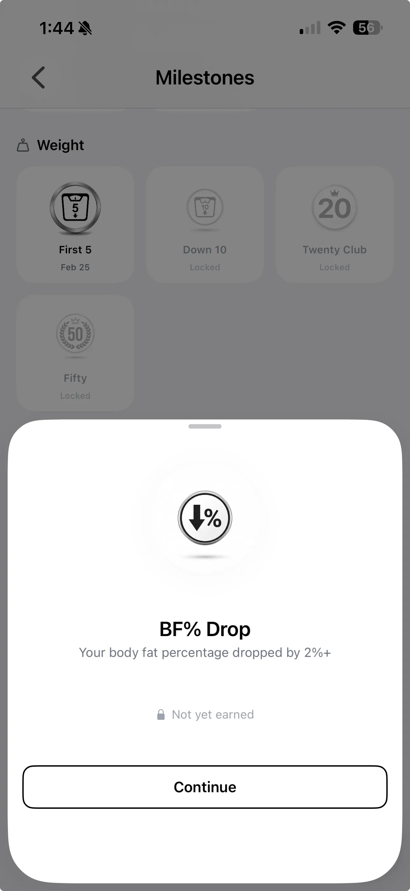

How to Calculate Body Fat from a Photo using AI
Frustrated by smart scales changing your body fat percentage based on how much water you drank? Measuring body fat from a photo using AI is the most reliable way to track your true physique progression.

A body fat from photo AI engine doesn't care if you just had a salty meal. It processes pixels. It looks for the visual boundaries of muscle groupings. It detects the presence (or absence) of subcutaneous fat blunting the separation between your deltoid and your tricep. It evaluates the depth of your abdominal lines.
When you use a photo to calculate body fat, you are measuring the actual, physical result of your hard work — the aesthetic reality of your physique.
The "Body Fat from Photo" AI Process
It's not magic; it's trained computer vision. When you upload a gym selfie into a dedicated body transformation app, the AI performs a structured analysis:
- Feature Extraction: The AI maps your body, identifying major muscle groups (chest, shoulders, arms, abdominals, back, and legs).
- Subcutaneous Fat Analysis: It specifically analyzes regions where humans naturally store stubborn fat (the lower abdomen, lower back, and hips) to gauge the smoothing effect over the underlying muscle.
- Definition Scoring: The engine scores the depth and clarity of muscle separation. For example, the visibility of the serratus anterior or the separation in the quadriceps are key indicators of sub-12% body fat in men.
- Score Generation: These visual markers are synthesized into a comprehensive Physique Score and an estimated body fat classification.
Body Fat Percentage Calculator by Photo: How to do it right
A body fat from picture AI is a powerful tool, but its accuracy depends entirely on the data you feed it. GIGO — Garbage In, Garbage Out. To get the most accurate and consistent body fat estimation from your photos, you must standardize your process.
Lock in your lighting
Harsh overhead lighting creates deep shadows that artificially enhance muscle definition. Flat, soft lighting washes you out. Pick one mirror with consistent lighting and use it every time.
Use Ghost Overlay
Apps like GainFrame offer a ghost camera overlay of your previous physique photo. This ensures your distance from the mirror, phone angle, and posture are identical week over week.
Pro Tip for reliable AI Scans: The AI needs skin to analyze body composition. Taking a photo in an oversized hoodie won't yield a body fat estimate. Strip down to the same level of clothing (e.g., just shorts, or a sports bra and leggings) for every single progress photo.
Tracking the trend, not just the number
A common trap is obsessing over the absolute number. Whether the AI says you are at 13.5% or 14.2% body fat today is less important than the trajectory of that number over time.

The true power of a body fat from photo app is unlocking an objective, long-term timeline of your body transformation. When you can literally see the visual differences perfectly aligned side-by-side, augmented by an AI body fat analysis that confirms the downward trend, you gain absolute certainty that your diet and training are working.

You stop relying on the unpredictable daily swings of a smart scale, and you start trusting what actually matters: the undeniable visual proof of your progress.